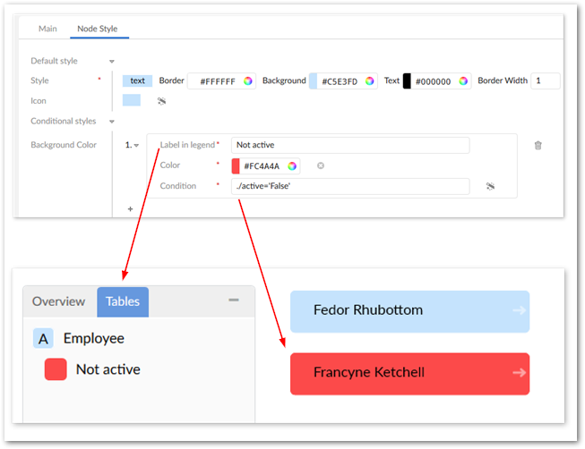
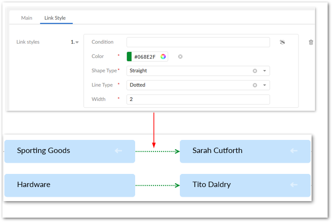

You can customize styles for data value graph nodes and relationships. Customization can be as basic as setting some default options, or as complex as basing style on the outcome of an evaluated XPath expression. You can also implement a Java class:
to define programmatic styles for links. A Java class allows you to define more complex logic, such as applying a style to only a specific foreign key path in the graph.
to create custom node templates. This gives you fine-grained control over the appearance of nodes. See Node templates for detailed instructions.
Customization of link styles is only available for relationships set to display as lines and not containers.
Administrators can customize display in the following locations:
Administration > User interface > TIBCO EBX® Data Model and Data Visualization Add-on > Value and relationship graphs > Table configuration > Node Style. Use the settings in the Default style group to determine how nodes display in normal conditions. All of the same default settings can be set individually to have one or more styles that display based on a condition. Simply select the plus icon and fill in the required fields.
In the image below, node color changes for employees that are not active. Also, you can specify a label that will be used in the table legend to differentiate these nodes.

Administration > User interface > TIBCO EBX® Data Model and Data Visualization Add-on > Value and relationship graphs > Link configuration > Link Style. Click the plus icon to edit link styles via the UI. Alternatively, use the Programmatic Style field to enter the fully qualified name to a Java class that defines link styles. The following image shows a customized link style.
